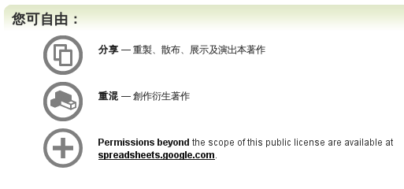
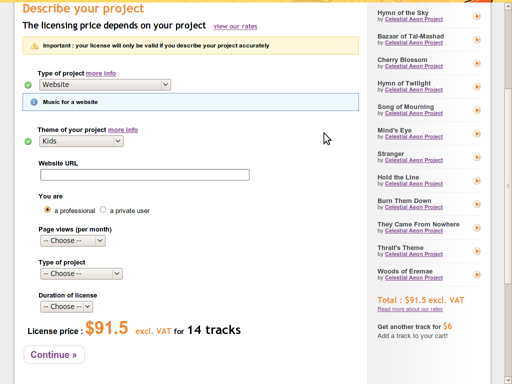

第四十三期：雜談ccPlus運作模式
|
|
CC 網誌選輯
編輯：辜雅蕾
創用CC授權條款3.0台灣版已經在2009.10.31正式上線創用CC計畫編輯群/文 在經過多次審慎檢查以及專家諮詢後，我們於2009年5月26日正式在網路上公開「創用CC授權條款 3.0 台 灣版」預演版。這幾個月的時間，我們廣納與蒐集了大家的意見後，又再度作了細微的修改，並且與 Creative Commons 位於舊金山的總部經過好幾次的聯繫、確認後，創用CC授權條款3.0台灣版終於完成本 地化的工作了。 … (閱讀全文) | 「建立數位公共領域-理論構建與在地實踐」國際學術研討會 報名開跑周文茵/文 2009年11月28-29日由數位典藏發起辦理「建立數位公共領域-理論構建與在地實踐(Restating Digital Public Domain-Theoretical Construction and Local Practice)」國際學術研討會。本會議主要以「數位公共領域」為核心焦點，邀集法律、新聞學、傳播學、社會學等領域之國內外研究者，就數位時代下公共領域概念於不同學門中之理論研析與在地性實踐議題，進行深入探討與研究成果分享。 … (閱讀全文) |
MozCC 在 Jetpack 裡重生：JetCC趙柏強/文 在弄 ccZotero 時，網頁裡後設資料皆經由 ccMetaView (MozCC 的一部份) 擷取而來。ccMetaView 的目標是要能夠抓到各式相關的後設資料格式 (而不論是否與 CC 相關)，這是好事，不過如果就真的只想抓 CC 的後設資料、是否有跟 MozCC 1.0 一樣的簡單套件呢？又，Firefox 的 API 隨著版本演進而變，而就 CC 總部投注在 MozCC 上的資源，顯然不足以隨著版本變動而更新，是否有更能快速修改的東西呢？ … (閱讀全文) | Film Annex 發表了六個專播 Creative Commons 授權影片的網路電視頻道黃寶莉/文 全紐約的 Film Annex 是一個專為獨立的影片製作者，及對獨立製作的影片有興趣的人提供的分享平台。以網路電視播放及線上影片出版的角色，Film Annex 突破從前大股東及廠商投資拍電影的模式，改以影片觀看者直接資助影片製作者的模式，成功地使全球的電影網絡，無論是電影愛好者、地下電影創作者、演員、電影社群、還是電影人才發掘者均得以輕易且直接地被串聯起來。 … (閱讀全文) |
CC 專題：雜談 ccPlus 運作模式
趙柏強/文
自 iSummit 2008 回來後，筆者撰寫的 Open Business 心得裡提過 ccPlus 這項技術。時過境遷，ccPlus 已經成為 ccREL (為作品以數位方式標示 CC 授權條款的標準規格) 的一部份，當您前往 CC 網站選擇授權條款時若填入「其他授權方式網址」，則產生的程式碼裡就會包含 ccPlus 的資訊。

簡言之，程式碼中的 rel="cc:morePermissions" 相應標籤中，正標示了進一步連絡的網址。如果使用者需要更進一步洽談授權、點選這個網址就對了！事實上，經由按下網頁上的 CC 授權標章前往授權標章的說明網頁時，說明網頁上也會告知訪客該去哪裡洽談更多授權。
授權代理實作方式
ccPlus 的原理十分簡單，商業組織要實作相應的功能也不太難。當創作者為自己的作品標上 ccREL 資訊、並且在其中包含 morePermission 資訊後，支援 ccREL 的瀏覽工具應能直接辨識出授權代理商的連結並提示使用者；在使用者點選授權代理商的連結後，主機端再加以辨識 HTTP 標頭中的 refferer 資訊，得知來源網址、再依據來源網址的原始授權方式決定要提供哪些額外的權利供使用者購買即可。
舉個例子：創作人「小強」以創用 CC 姓名標示—非商業性—相同方式分享條款授權他人使用自己的歌曲，而聽眾「包柏」很喜歡這首歌、並且想用在自己的作品上，但基於種種因素無法遵守這個授權條 款，於是他點選小強網頁上的「其他授權方式請點選此處」，連到了授權代理商 morepermission.com 的網頁。morepermission.com 此時因為 HTTP refferer 的資訊得知包柏因小強的歌曲而來，並且從小強的原網頁查明小強採用 CC:BY-NC-SA 條款，因此自動列出下列購物選項供包柏選擇：
- 除原條款授予之權利外、額外增加「商業使用」的權利：1000 元/單件作品
- 除原條款授予之權利外、額外允許免去「相同方式分享」的權利：3000 元/單件作品
- 直接購買一般性商業使用權利 (不需標示姓名、不需相同方式分享)： 20000 元/單件作品
包柏勾選第 1 及第 2 項，並且填寫相關資訊後結帳，便擁有在單件商業作品上利用小強的歌曲、且不需以相同方式分享的權利。每個月都有數十位像包柏這樣的人前來 morepermission.com 購買小強作品的額外權利，而 morepermission.com 則在月底與小強一次回報本月的銷售狀況及結算金額。包柏跟小強都免去了信件往來的等待時間與麻煩，而 morepermission.com 則收取一定比例的服務費。
衍生問題
剛剛的流程看起來還不錯，但就技術面來說，其中會有幾個問題：
1. 包柏要的，是小強網頁上的哪個作品？
當同一個網頁上又有圖、又有文、又有音樂，程式如何判斷 ccREL 所指的東西是什麼？ccREL 可能出現在網頁上的任一處，即便授權代理商能循線回到來源網頁查驗、也無法用電腦程式準確判斷出網頁上的那個部份是授權的標的。
2. morepermission.com 怎麼自動提出購物選項？
最簡單的想法是，原始的授權條款有哪些元素，就提出相對應的「取消」選項。例如本例中原始授權標的物採「姓名標示—非商業性—相同方式分享」授權大眾使用，那麼直接提出「不需姓名標示」、「允許商業利用」、「不需以相同方式分享」作為採購選項似乎便是可行的方式。
不過考慮到原始著作人的意願，那麼事情又有些不同：或許對小強來說，取消「相同方式分享」跟「非商業性」都還好說話，但很堅持必須保留「姓名標示」的權利，此時 morepermission.com 還是必須提出相應的機制來回應著作人意願。
當然，也要考慮到我們並不需要在「more permission」的層面上被 CC 的各項元素綁死，而更可以直接將「一般性的商業使用權利」當成選項之一。選擇此項時，買賣雙方的關係就不是「我已經獲得著作人以 CC 某條款授權、且著作人對我額外免除某些條件」，而是「我已經獲得著作人以一般商業使用權利授權」，則此時就完全不需要看 CC 的條約內容，對於利用人來說或許更為簡便。
3. 如何定價？
取消各種權利時，該怎麼定價？且雖然範例裡「不需相同方式分享」的價碼較「可商業利用」來得高，但不同的著作人可能又有不同的看法。又，依據使用目的不同、定價方式也該有所差異：耗資千萬的電影與巷口的咖啡館要用你的音樂，應該就有不同的計價方法。
這 3 個問題都可以經由著作人與代理商先行約定來解決，也就是說小強在 morepermission.com 上先註冊一個帳號，指定「由這個網址來時、代表著作物是這首歌」、選擇願意有條件除去的授權元素、再分別就各種情形自行給予定價。也或許小強可以指定「某 個網址來的著作、一律堅持保留姓名標示元素」、「某些特定網址的著作，一律僅給予『直接購買一般性商業使用權利』的選項」等等。
不過既然要「登記」，那麼又衍生出「如何知道帳號的所有人就是作品所有人」的問題，這個層面其實已經離 CC 所關心的事情有點遠，但又容易被牽扯為 CC 應該解決的問題。筆者認為，無論有沒有 CC、在世界上盜用別人作品自稱作者的事情也本來就存在，那麼原本怎麼解決就怎麼解決，原本難以解決的也不用在這個地方苛求 CC 有所作為。目前來說，服務商及購買者只能相信網頁提供者確實提供了自己擁有著作權的作品。
其他玩法
上面舉的例子是獨立的授權代理商機制，也是筆者認為比較開放的玩法。依據這個作法，使用者可以自由選擇作品的發佈平台及授權代理商，避免被一家公司綁死。
不過，事實上在目前可見的 ccPlus 服務供應商裡，大多都是把著作發表平台 (content hosting) 直接結合金流，還沒有看到開放、接受外部作品一起販售的情形。以 Jamendo 為例，在平台上發表的音樂內含 ccPlus 資訊，但使用者沒辦法選擇授權代理商，而是會直接又連回 Jamendo 的授權網頁。
此外，能夠選擇的授權方式也不若 ccPlus 原先「可以隨選要減少的授權要素」的規劃，而大多是直接就作品要利用的層面來販售商業性使用授權。也以 Jamendo 為例，在選擇好要買的歌曲之後，網站會出現表單要求你描述作品的應用方式，並藉以決定要收多少費用。
這種方式把剛剛提到的作品、購物選項、定價等問題，都直接由該平台幫你決定了。雖然一次解決了很多問題，但相對來講就不那麼自由，且使用者若想藉由多個平 台來增加曝光度，也無法選擇統一的授權代理商來簡化收費流程。但不可否認，這樣的實作方式對於服務提供者來講是比較方便，利益也比較高的，因此無怪乎大家 都以此種方式實作 ccPlus。
但就算作品發佈平台想兼營金流機制來收一點服務費，無可避免也必須付出相對的營運成本與代價。所以可以想見另一種模式很可能會在不久的將來出現：作品發佈 平台提供有限的選擇，讓著作人自三到四家的授權代理商中選擇其一，而發佈平台再與授權代理商分享手續費。這個模式可以讓發佈平台免去增加金流業務的麻煩、 且又能讓想合作的授權代理商自行「投標」加入合作伙伴，獲得一定利益，著作人也能因此獲得 (有限的) 選擇自由。若授權代理商增加到一定的數目，這個方式很可能在未來成為主流。
那麼，目前有多少獨立授權代理商？
在筆者有限的資訊裡，答案是零、一家都沒有。
ccPlus 概念推出已經超過兩年，目前實際支援這項技術的獨立授權代理商就是找不到。以全球作為市場範圍來講，這多少應該還是個有利可圖的行業，會造成毫無獨立廠商支援的理由，筆者隨便猜一下：
- CC 不紅，ccPlus 更不紅：也就是「這是個解決問題提升利益的好技術，但知道的人不多、實作的人當然更少」。其實這是最好的狀況，問題僅僅在推廣而已，而不是機制本身有問題。
- 著作發表平台不支援：獨立授權代理商想賺錢，那麼自然希望有足量的著作人使用 ccPlus 技術、且願意指定自己為授權代理。但目前提供著作人發表著作的服務平台、似乎都沒看見能讓你選擇外部授權廠商的設定可填。
- 雞生蛋蛋生雞：以著作發表平台的角度而言，現在這類授權代理機制還不風行，好像也沒有必要提供支援。上述兩點明顯為雞生蛋、蛋生雞的情境，讓支援 ccPlus 的獨立授權代理商在短期之內只能從自己架主機發表作品的著作人身上賺到服務費，吸引力太小。
- 也或許，這個市場本來就小得可憐？筆者不這麼認為，但沒有統計數據支持的情形下這必須列為一個可能。
其實應該再加一個「以上皆非」 —— 也或許其實 ccPlus 機制設計上有什麼問題，是我們這些太熟悉 CC 的人沒有注意到的？
無論如何，有更多的後設資料我們就有機會利用機器做更多的事，ccPlus 是後設資料的一種、與其相關的授權機制也有推動的價值。筆者在接下來的半年內將尋訪創作者及既有平台服務商 (包括著作發表平台及線上授權服務平台等)，希望能整理出 ccPlus 機制運作架構建議及目前的狀況分析，期待明年中有機會再與各位分享心得與成果。
如果您想了解更多關於 ccPlus 的資訊，請見 CCTW Wiki。
如果您想參與這項研究或討論，請前往筆者網誌留言指教。